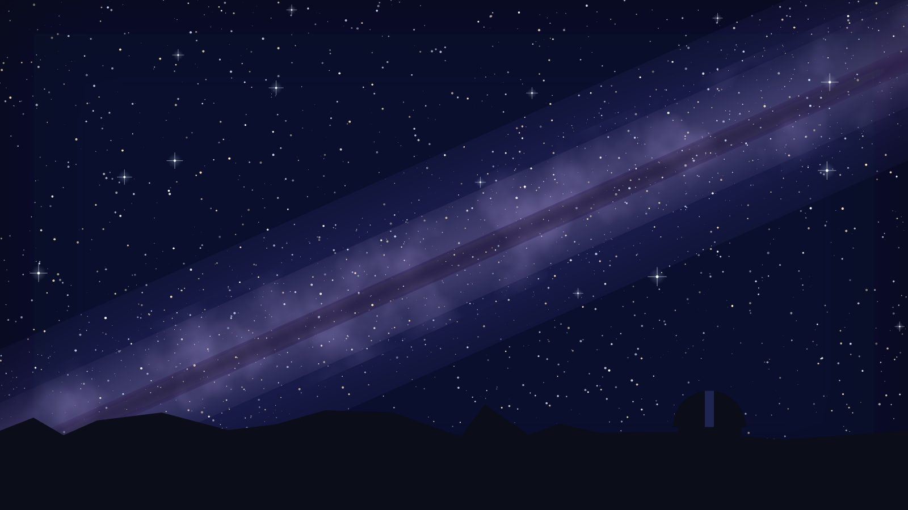
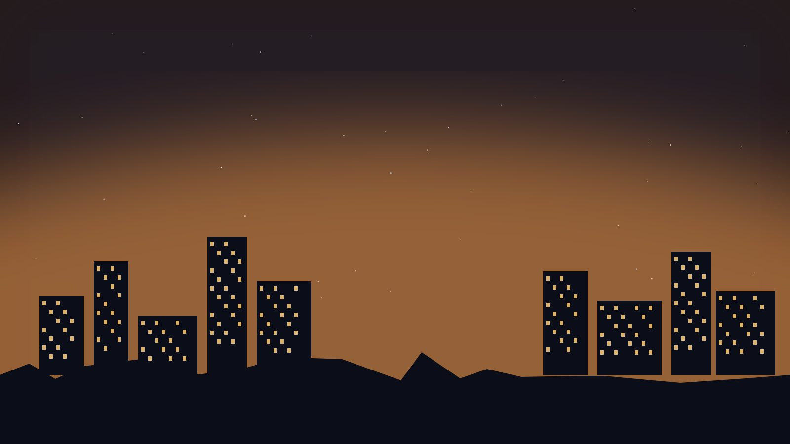

Observatório público · Serra Alta – SP
O céu que a cidade apagou
A 1.600 metros de altitude e a 40 km da luz mais próxima, o Estrela da Serra abre a cúpula toda sexta e sábado para quem quer ver planetas, nebulosas e chuvas de meteoros com os próprios olhos.
Mova o mouse pelo céu para revelar as constelações
Pelo telescópio de 400 mm
Planetas que você vai ver
Passe o mouse ou toque no cartão para virar e ver os dados de cada planeta. A barra mostra a gravidade comparada à da Terra.
Dados do observatório
O céu em números
- Observação no telescópio 45%
- Astrofotografia 25%
- Palestras 18%
- Oficinas 12%
Poluição luminosa
A diferença que um céu escuro faz
Arraste a linha para comparar o mesmo pedaço de céu fotografado na cidade e aqui na serra.


Cidade SerraSextas e sábados, das 20h à meia-noite
Sua noite na cúpula começa aqui
Vagas limitadas a 30 pessoas por sessão para todo mundo ter tempo no telescópio.
Ver agenda completa